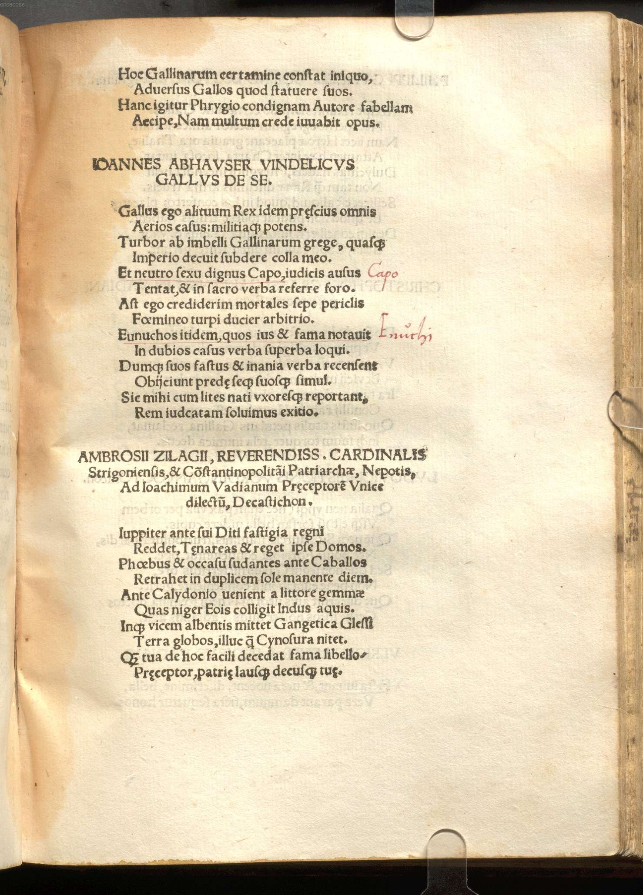

Watt 7 (Ambrus Szilágyi)
Faksimile

Transkription
Ambrosii Zilagii, reverendissimi cardinalis Strigoniensis, et Constantinopolitani Patriarchae, Nepotis, Ad Ioachimum Vadianum Praeceptorem unice dilectum, Decastichon.
Iuppiter ante sui Diti fastigia regni
Reddet, Taenareas et reget ipse Domos.
Phoebus et occasu sudantes ante Caballos
Retrahet in duplicem sole manente diem.
Ante Calydonio venient a litore gemmae
Quas niger Eois colligit Indus aquis.
Inque vicem albentis mittet Gangetica Glaesi
Terra globos, illuc qua Cynosura nitet.
Quam tua de hoc facili decedat fama libello,
Praeceptor, patriae lausque decusque tuae.
Übersetzung
Zehnzeiler des Ambrus Szilágyi, des Enkels des verehrtesten Kardinals von Esztergom und des Patriarchen von Konstantinopel, auf Joachim Watt, den einzigartig geschätzten Lehrer.
Jupiter wird Pluto vorher die Würden seiner Herrschaft zurückgeben und selbst die Häuser der Unterwelt beherrschen. Phoebus wird vorher die Pferde, die sich beim <Sonnen>untergang abmühen, zurück zu einem zweifachen Tag führen, wobei die Sonne bleibt. Vorher werden von der kalydonischen Küste Edelsteine kommen, die der schwarze Indus in seinen östlichen Wässern sammelt. Und im Gegenzug wird das Land des Ganges Klumpen von strahlendem Bernstein dorthin schicken, wo der kleine Bär strahlt. <All dies wird vorher geschehen> als dass dein Ruhm von diesem gefälligen Büchlein vergeht, Lehrer, und das Lob und der Stolz deiner Heimat.
Metadaten
| Titel des Gedichts: | Ambrosii Zilagii, reverendissimi cardinalis Strigoniensis, et Constantinopolitani Patriarchae, Nepotis, Ad Ioachimum Vadianum Praeceptorem unice dilectum, Decastichon. |
| Autor der Gedichts: | Ambrus Szilágyi (Ambrosius Zilagius) |
| Containerwerk: | Ioachimi Vadiani Helvetii Mythicum Syntagma, Cui Titulus Gallus Pugnans, Wien 1514 |
| Autor des Containerwerks: | Joachim Watt (Joachim Vadianus) |
| Gattung des Containerwerks: | Satire, Drama |
| Erscheinungsjahr: | 1514 |
| Verschlagwortung: | Mythologie, Exemplum, Jupiter, Pluto, Herrschaft, Unterwelt, Apoll, Sol, Adynata, Indus, Ganges, Edelsteine, Bernstein, Lob, Ruhm, Buch, Nachruhm, Heimat |